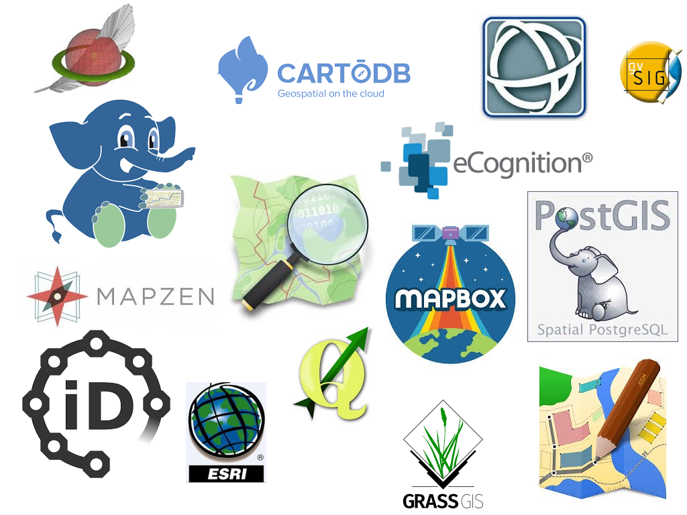
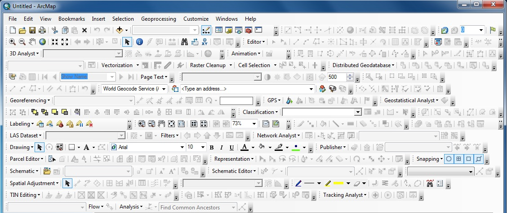

...and I work with data and maps * *in Python, whenever I can
Spatial Python
Programme:
Intro
Setup
Data Handling
Data Visualisation
Why Python?


Some good news...
"Most GIS software started out as a project for some company and then morphed into a product.
They are a collection of tools created for specific projects duct taped together and sold as a subscription."
(Fee, 2016)
Reason is... Python integrates well with the "geo" C++ codebase